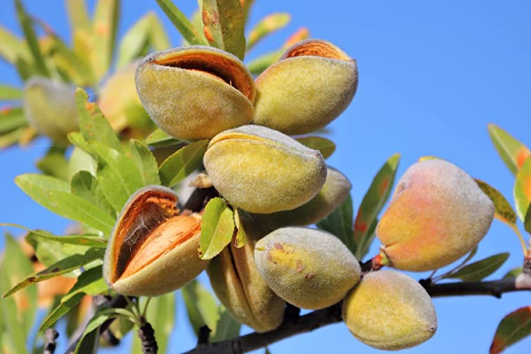

Almonds are a great source of nutrition and are one of the healthiest nuts you can eat. They are packed with essential vitamins and minerals, healthy fats, and fiber, making them a perfect snack for anyone looking to improve their health and well-being. In this post, we'll explore the nutritional benefits of almonds and why you should make them a part of your daily diet.
Not only are they rich in nutrients, they are also heart-healthy, help to control blood sugar, and are effective in weight management!
Rich in Nutrients
Almonds are a rich source of nutrients such as vitamin E, magnesium, fiber, protein, and healthy fats. Vitamin E is a powerful antioxidant that helps protect your cells from damage, while magnesium helps regulate blood pressure and blood sugar levels. The fiber in almonds promotes digestion, and the protein helps keep you feeling full for longer.
"As a doctor, I always recommend almonds to my patients for their numerous health benefits. They are a great source of nutrition, packed with essential vitamins and minerals, healthy fats, and fiber. Regular consumption of almonds can help lower the risk of heart disease, regulate blood sugar levels, and promote weight management. Incorporating almonds into your diet is a simple and effective way to improve your overall health and well-being." - Dr. Tarik Hasic
Heart-Healthy
Almonds are good for your heart health. They are rich in monounsaturated fats, which can help lower your bad cholesterol levels and reduce the risk of heart disease. Studies have shown that consuming almonds regularly can lower the risk of heart disease by reducing inflammation and improving blood flow.
 Almonds in their natural habitat, growing on a tree.Helps Control Blood Sugar
Almonds are also good for people with diabetes or those who are at risk of developing it. The fiber and healthy fats in almonds help slow down the absorption of sugar in your bloodstream, which can help regulate your blood sugar levels. This can help prevent spikes in blood sugar levels, which can lead to insulin resistance and type 2 diabetes.
Weight Management
Almonds are a great snack option for people who are trying to manage their weight. The combination of fiber and protein in almonds can help keep you feeling full for longer, reducing the need to snack on unhealthy foods. Additionally, almonds contain fewer calories per gram than other snack options, making them a great choice for people looking to lose weight.
Written by WellnessVoyageHQ · Images by NASA